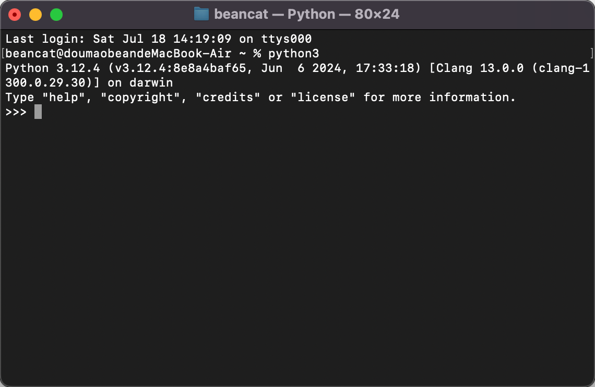

Lecture 1: Python 基础
表达式与变量 · 函数定义 · 条件控制 · 高阶函数 (HOF)
📄 下载讲义 PDF (lec1-note.pdf)一、Python 入门
Python 是一种广泛使用的解释型、高级、通用编程语言。
在终端中运行 Python
- 按下
Cmd + Space，搜索 Terminal（终端），打开它。 - 输入
python3并回车，即可启动 Python 解释器。

在终端中启动 Python 3 解释器在终端中运行 Python 可以一句一句地交互式执行代码，非常适合初学者学习语法。
二、基本表达式
Python 会自动计算每个表达式的值并返回。试着在解释器中输入以下内容：
>>> 2
2
>>> -2
-2算术运算
>>> 1 + 2 # 加法
3
>>> 3 - 2 # 减法
1
>>> 2 * 2 # 乘法
4
>>> 3 / 2 # 除法（浮点数）
1.5
>>> 3 // 2 # 整除（向下取整）
1
>>> 5 % 3 # 取余（模运算）
2// 是整除（floor division），% 是取余（modulo）。这两个运算符在实际编程中非常常用。
布尔表达式
>>> 3 == 2 # 等于判断
False
>>> 2 < 3 # 小于比较
True
>>> 3 != 2 # 不等于
True
>>> 5 >= 5 # 大于等于
True三、变量与值绑定
Python 中的变量将名称与值绑定在一起。等号（=）是赋值运算符，而不是数学意义上的等式。
>>> x = 3
>>> x
3
>>> 2 * x
6
>>> x = x + 2 # 将 x 重新绑定到 x + 2
>>> x
5x = x + 2 的意思是：取出 x 当前的值，加上 2，再将名称 x 绑定到新结果。这不是代数方程，而是一系列计算步骤。
四、函数
函数是对输入到输出的映射：f(x)。Python 中有很多内置函数（如 max、min、abs），同时你也可以自定义函数。
定义简单函数
>>> def add_one(x):
... return x + 1
...
>>> add_one(3)
4
>>> add_one(5)
6
>>> add_one(add_one(3)) # 嵌套函数调用
5>>> def square(x):
... return x * x
...
>>> square(3)
9
>>> square(add_one(3)) # square(4) = 16
16多参数函数
>>> def x_plus_y(x, y):
... return x + y
...
>>> x_plus_y(1, 2)
3函数也是值
Python 中的函数是一等公民 —— 你可以像绑定数字一样，将函数绑定到变量名：
>>> s = square
>>> s(2)
4五、条件控制语句
print 函数
在深入条件语句之前，先来理解 print。print 的功能是在屏幕上打印内容，但它的返回值是 None。这两者需要区分开来：
>>> 3
3
>>> print(3)
3
>>> print(print(3))
3
None3 直接输入会返回 3（由解释器显示出来），而 print(3) 虽然也显示了 3，但那是 print 的副作用；print 本身的返回值是 None。print(print(3))：内层 print(3) 打印 3 并返回 None，外层 print 打印这个 None。
if 语句
if 会判断后面表达式的值。如果表达式的值为 True，则执行下方缩进的代码块。如果有 else 子句，则当条件为 False 时执行 else 下方的代码块。
>>> def python(x):
... if x > 0:
... print("positive")
... else:
... print("not positive")
...
>>> python(3)
positive
>>> python(-3)
not positive
>>> python(0)
not positiveelif 子句
elif（即 "else if" 的缩写）可以串联多个条件。Python 会按顺序依次检查每个条件，第一个为 True 的条件对应的代码块会被执行，其余则被跳过。如果所有条件都不满足，则执行 else（如果有的话）。
>>> def abs(x):
... if x > 0:
... return x
... elif x == 0: # 此处仅为演示 elif 语法
... return x # 实际可简化为 if x >= 0
... else:
... return -x
...
>>> abs(3)
3
>>> abs(-3)
3elif x == 0 的分支并不是必需的 —— 这里只是为了演示 elif 的写法。实际使用中，前两种情况可以直接合并为 if x >= 0。
六、高阶函数 (Higher-Order Functions)
这是本节课最具挑战性的部分。
高阶函数（Higher-Order Function，简称 HOF）是指接收另一个函数作为参数和/或返回一个函数作为结果的函数。函数和数字一样，是可以被传递和操作的值。
函数作为参数
>>> def square(x):
... return x * x
...
>>> def cube(x):
... return x * x * x
...
>>> square(2)
4
>>> cube(2)
8将一个函数作为参数传递给另一个函数：
>>> def apply(x, f):
... return f(x)
...
>>> apply(3, cube) # cube(3) = 27
27
>>> apply(4, square) # square(4) = 16
16apply 并不关心 f 具体做了什么 —— 它只是用 x 去调用 f，然后返回结果。这种抽象让我们可以编写通用的、可复用的代码。
函数作为返回值（闭包）
高阶函数真正的威力在于：一个函数可以返回另一个函数。
>>> def make_adder(n):
... def adder(x):
... return x + n
... return adder
...
>>> add_3 = make_adder(3)
>>> add_3(3) # 3 + 3
6
>>> add_3(6) # 6 + 3
9
>>> add_5 = make_adder(5)
>>> add_5(5) # 5 + 5
10adder 会"记住"它被创建时 n 的值。这种机制被称为闭包 (Closure) —— 编程中最强大的概念之一。•
add_3 = make_adder(3) → adder 记住了 n=3 → add_3(x) = x + 3•
add_5 = make_adder(5) → adder 记住了 n=5 → add_5(x) = x + 5
可视化代码执行
为了更直观地理解函数和闭包的运行过程，强烈建议使用以下交互式可视化工具：
将代码粘贴进去，逐行执行，就能看到 Python 是如何计算表达式、绑定变量以及管理函数调用的。
七、本讲小结
- 基本表达式 —— 数字、算术运算（
+ - * / // %）和布尔运算（== != < >） - 变量 —— 用赋值运算符
=将名称与值绑定；x = x + 2是重新绑定 - 函数 —— 用
def和return定义可复用的计算单元 - 函数即值 —— 可以将函数绑定到变量名（
s = square） - 条件控制 —— 用
if、elif和else控制程序流程 - print 与 return ——
print有副作用但返回None；return返回计算结果 - 高阶函数 (HOF) —— 接收或返回函数的函数；内部函数"记住"创建时变量的值即为闭包
make_adder 的代码粘贴进去，逐步执行，观察每一行代码对程序状态的影响。